AQUI TE DEJAMOS 5 IDEAS DE JARDINES PARA QUE PUEDAS REPLICARLO EN TU HOGAR
JARDIN TROPICAL
Los jardines tropicales recrean la exuberancia de las selvas tropicales, ofreciendo un entorno lleno de vida y color. Caracterizados por una vegetación exuberante, con hojas grandes y brillantes, y una paleta de colores intensos.Los jardines tropicales son una explosión de vida que te invitará a relajarte y disfrutar de la naturaleza en su máxima expresión.
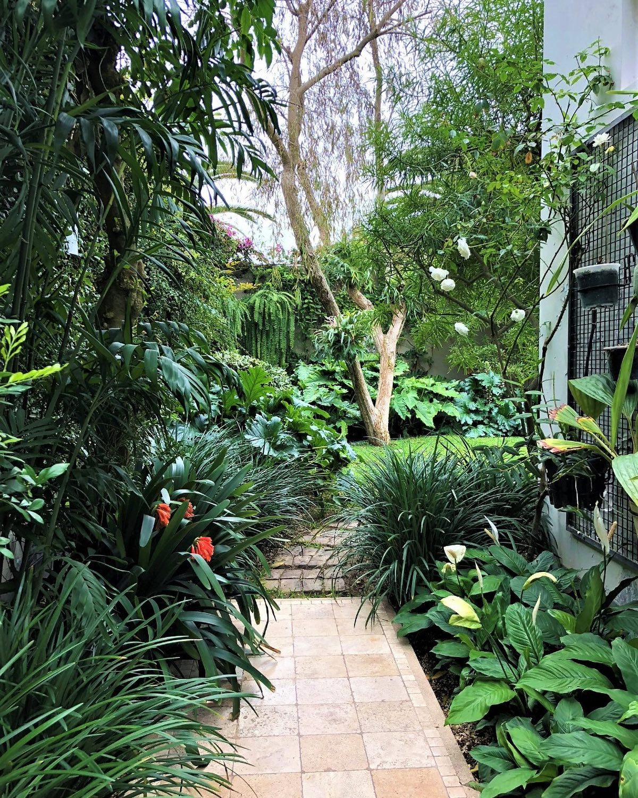 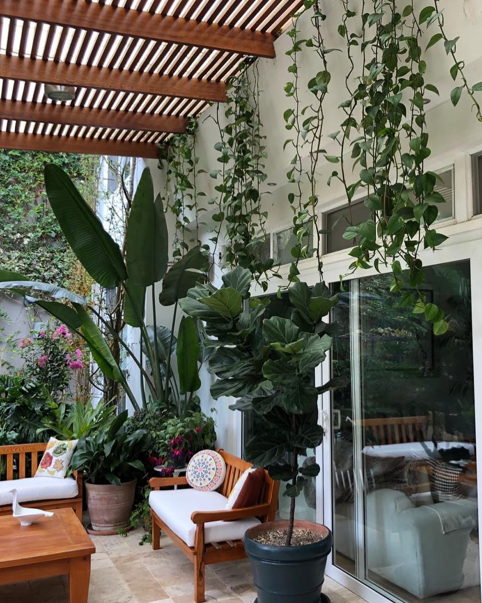 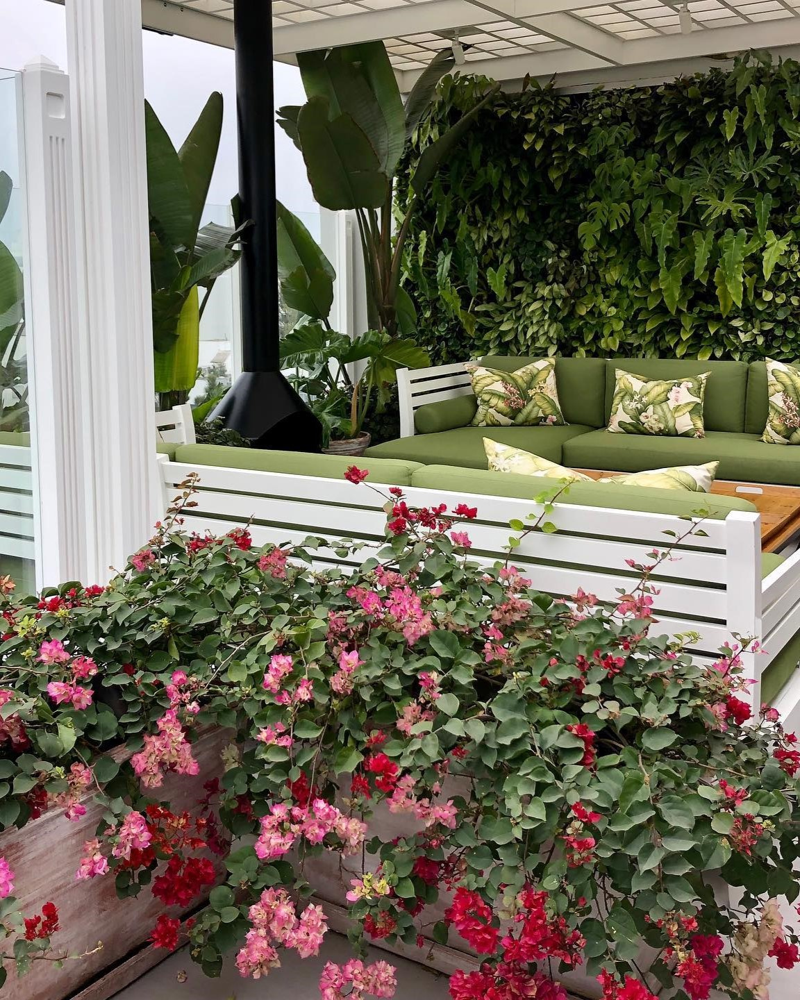 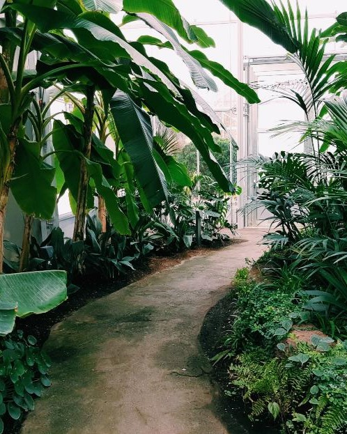JARDIN ZEN
Un jardin zen aporta paz y tranquilidad, y en concreto,los jardines zen mejoran el "feng shui" de una casa, que es un sistema para organizar de manera armonica los espacios. Para el "Feng Shui", el orden de cada elemento marcara el equilibrio natural del espacio
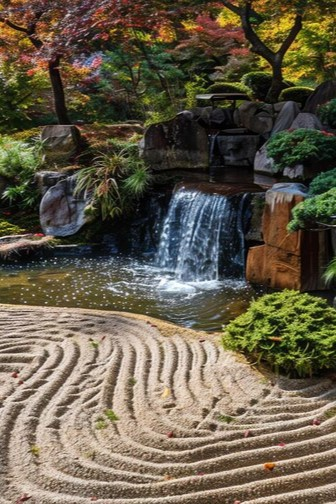 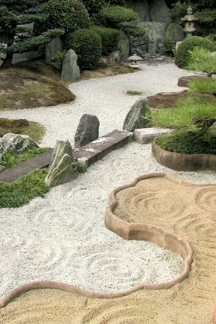 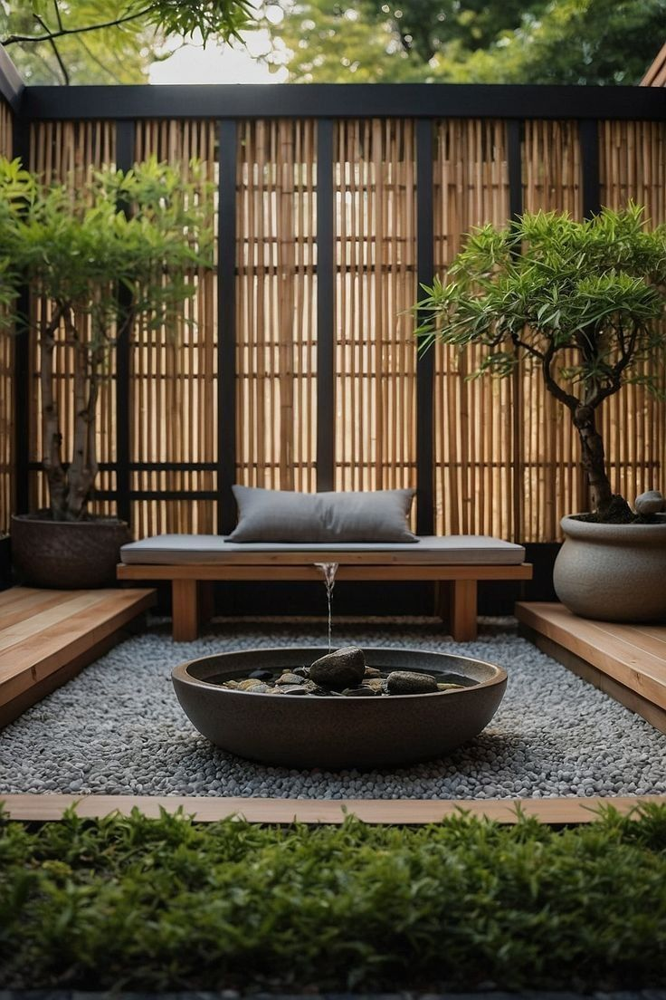 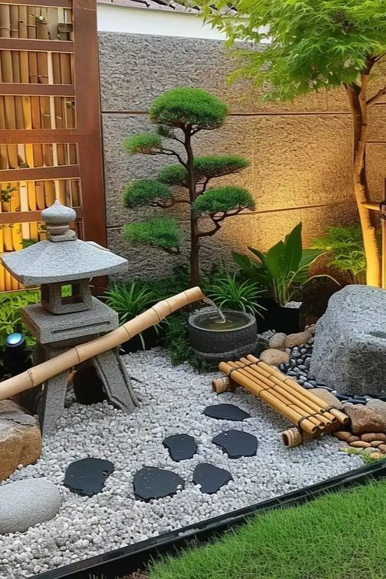JARDIN MEDITERRANEO
Es un estilo de diseño paisajístico inspirado en las características climáticas, flora y cultura de las regiones que rodean el mar Mediterráneo. Este tipo de jardín se define por su capacidad de armonizar belleza, funcionalidad y sostenibilidad en un entorno que suele ser cálido y seco, con veranos largos y soleados e inviernos suaves y lluviosos.
También incorpora elementos decorativos que evocan la arquitectura tradicional mediterránea, como caminos de piedra, fuentes, cerámicas pintadas y pérgolas cubiertas de enredaderas, creando un espacio relajante y acogedor que invita al disfrute del aire libre.
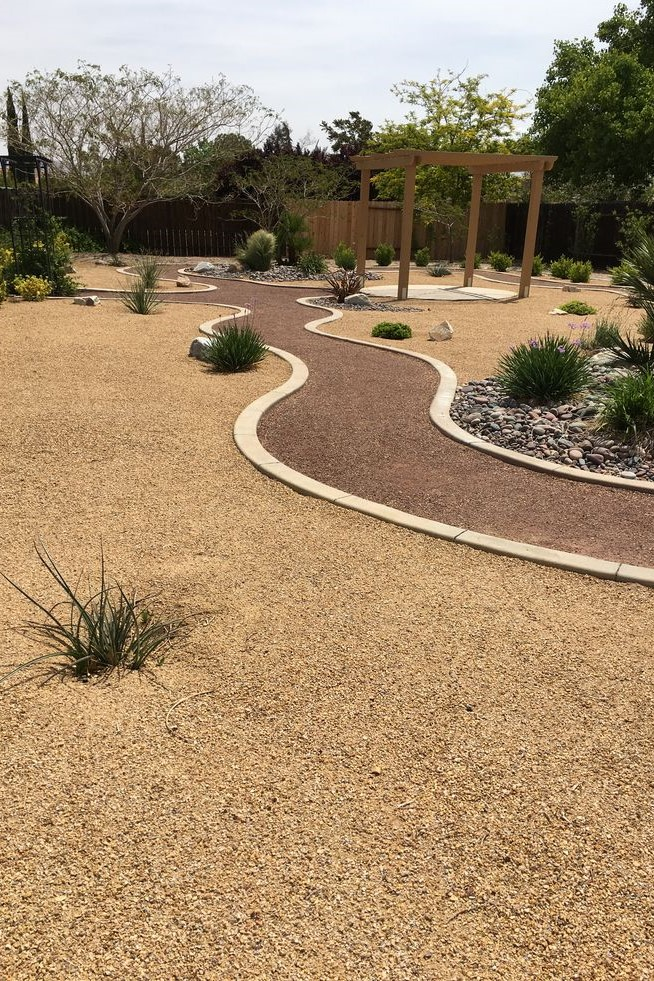 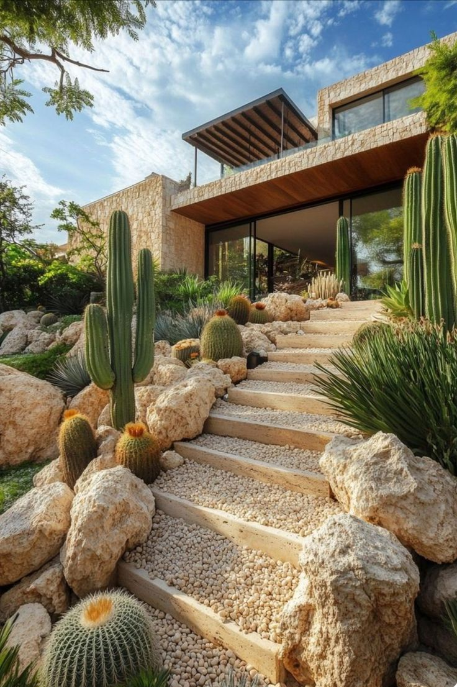 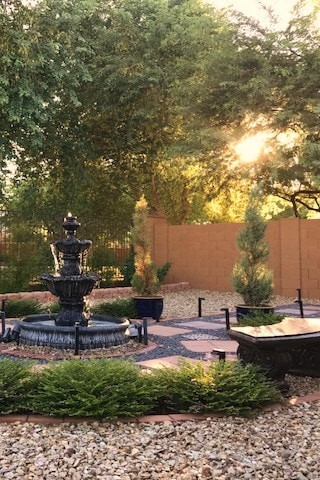 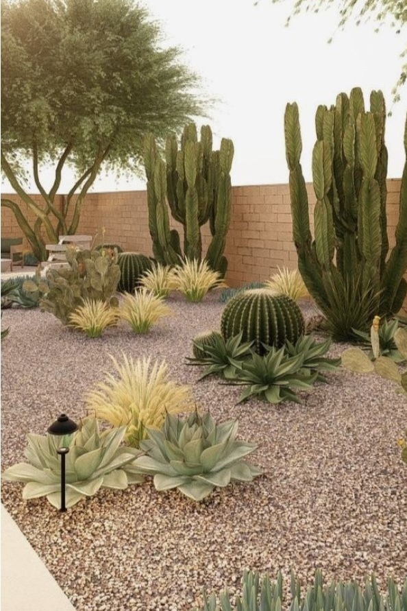JARDIN INGLES
Este estilo se caracteriza por la búsqueda de un paisaje natural y armonioso, inspirado en la naturaleza, con elementos que evocan tranquilidad y romanticismo.
El jardín inglés imita un paisaje silvestre, con caminos serpenteantes, lagos, colinas suaves, praderas y árboles dispuestos de manera aparentemente casual. Elementos como puentes, pérgolas, grutas y ruinas artificiales suelen incorporarse para crear una atmósfera pintoresca y poética. La intención es provocar una sensación de naturalidad, pero con una planificación cuidadosa que busca.
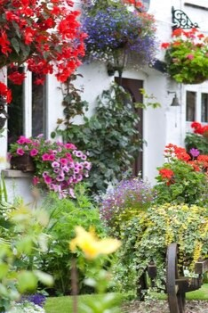 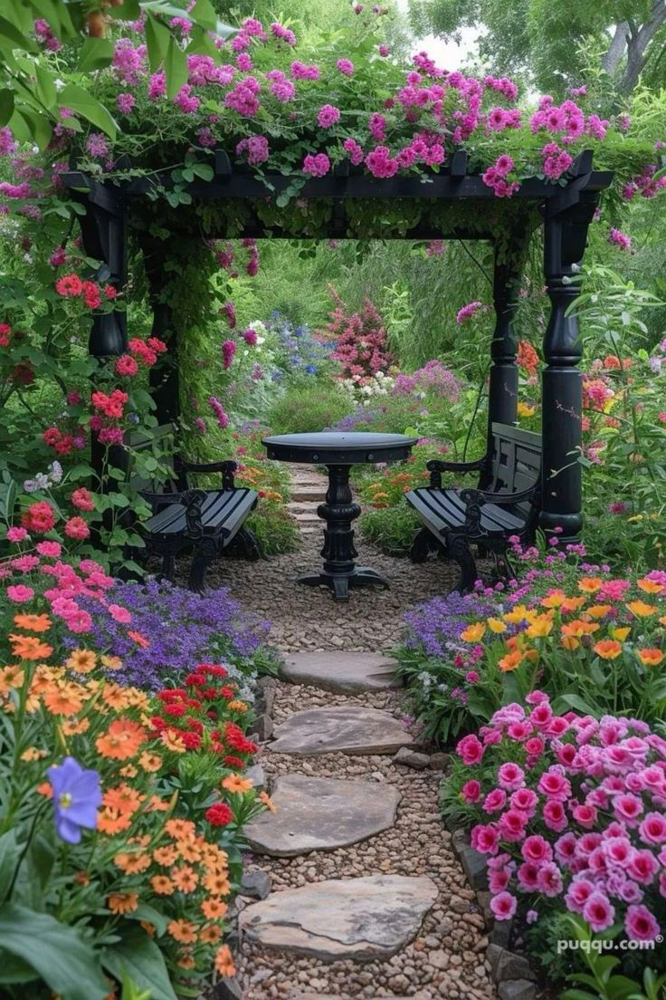 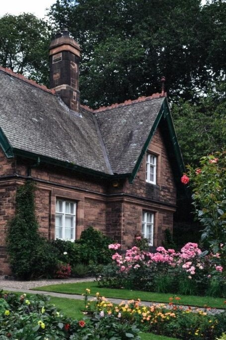 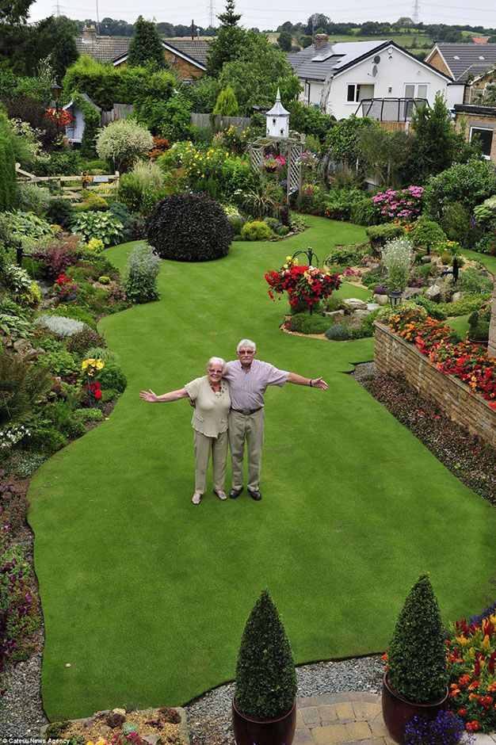JARDIN VERTICAL
Los jardines verticales no solo embellecen los espacios, sino que también aportan beneficios ambientales como la purificación del aire, la reducción del efecto de isla de calor, el aislamiento térmico y acústico, y el incremento de la biodiversidad en entornos urbanos. Además, representan una solución sostenible para aprovechar al máximo los espacios disponibles en interiores o exteriores.
Esta innovadora forma de diseño combina la naturaleza con la arquitectura, permitiendo integrar espacios verdes incluso en áreas reducidas o urbanas.
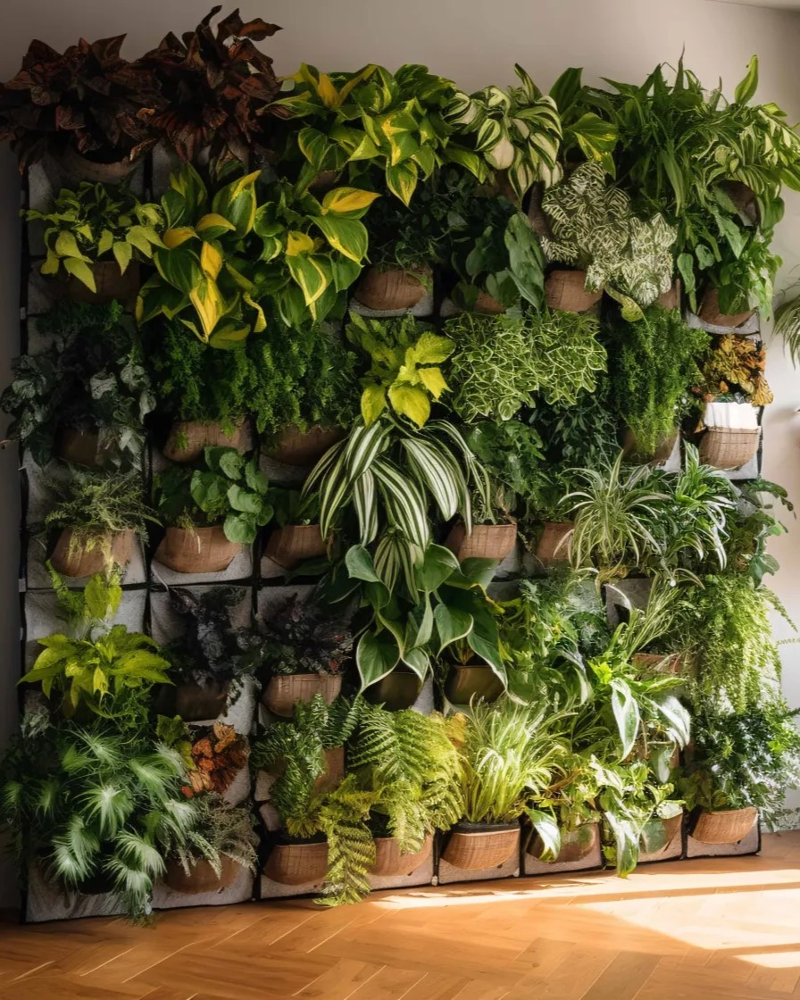 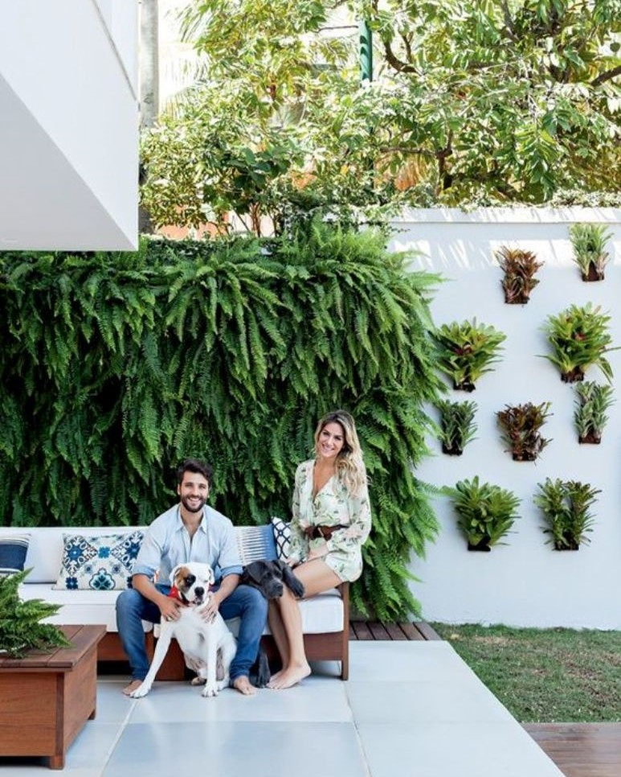